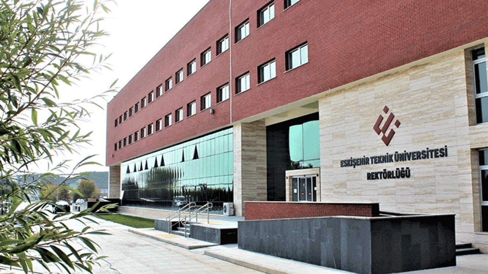
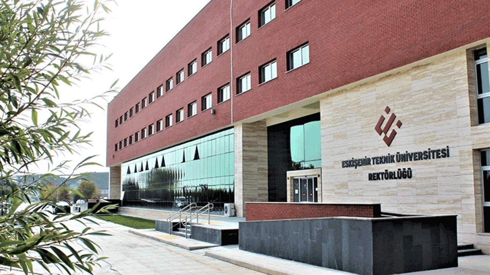

Eskişehir Technical University (ESTÜ) stands as a prominent institution of higher learning situated in the vibrant city of Eskişehir, Turkey. Established in 2018, ESTÜ aspires not only to deliver top-tier education but also to spearhead pioneering research initiatives and foster meaningful societal advancement through its academic endeavors.
Statics
Total Students: 10,000
Academic Staff: 500
Administrative Staff: 200
Administrative Units
ESTÜ comprises various administrative units responsible for different aspects of university operations, including academic affairs, student services, research, and development.
Eskişehir Technical University is committed to fostering an inclusive and diverse learning environment where students can thrive academically and personally. Our modern campus facilities provide students with access to state-of-the-art laboratories, libraries, and recreational spaces.
Additionally, ESTÜ actively promotes interdisciplinary research and collaboration, aiming to address global challenges and contribute to technological advancements.
 
